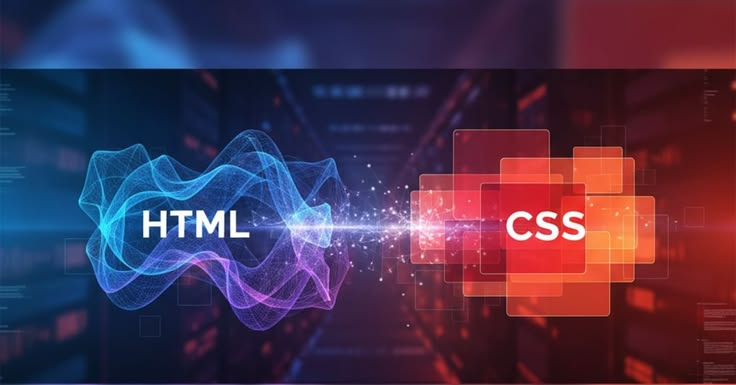
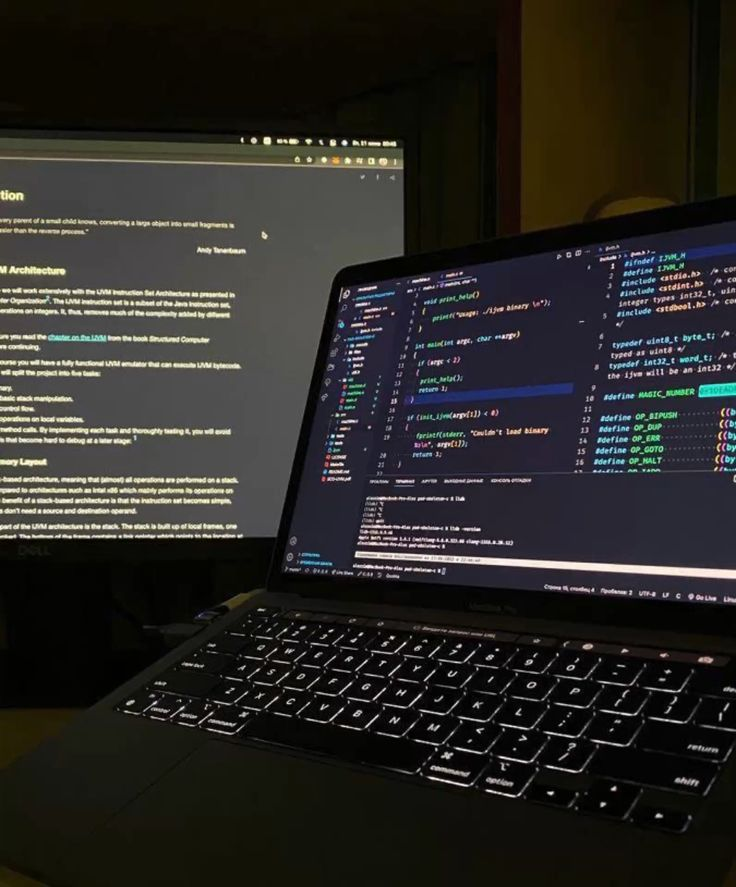

01 · WEB FUNDAMENTALS
HTML & CSS
Pelajari dasar pembuatan website menggunakan HTML untuk menyusun struktur halaman dan CSS untuk mengatur tampilan agar lebih menarik.
Explore Material →ACADEMY
Pelajari dunia teknologi dan pengembangan perangkat lunak melalui materi yang disusun secara bertahap. Mulai dari membangun website hingga mengelola database, semuanya bisa kamu pelajari di sini.
Explore Categories
Rekayasa Perangkat Lunak (RPL) merupakan bidang yang mempelajari proses pembuatan, pengembangan, pengujian, dan pemeliharaan perangkat lunak.
Melalui Lumora Digital Learning, kamu dapat mengenal berbagai dasar teknologi yang digunakan dalam dunia pengembangan perangkat lunak. Materi dirancang agar mudah dipahami, bahkan untuk pemula.
Temukan bidang yang ingin kamu pelajari dan mulai perjalananmu dalam dunia teknologi.

Pelajari dasar pembuatan website menggunakan HTML untuk menyusun struktur halaman dan CSS untuk mengatur tampilan agar lebih menarik.
Explore Material →
Kenali prinsip desain antarmuka dan pengalaman pengguna untuk menciptakan aplikasi yang menarik, nyaman, dan mudah digunakan.
Explore Material →
Pelajari dasar pemrograman JavaScript untuk memahami logika program dan membuat halaman website menjadi lebih dinamis.
Explore Material →
Pahami cara menyimpan, mengatur, mengelola, dan mengambil data menggunakan konsep database dan bahasa SQL.
Explore Material →Belajar teknologi tidak harus langsung memahami semuanya. Mulailah dari konsep dasar, pahami setiap materi, lalu kembangkan kemampuan melalui latihan dan proyek sederhana.
Materi disusun secara bertahap agar lebih mudah dipahami oleh pemula.
Pembelajaran dibagi menjadi beberapa kategori sehingga lebih terarah.
Kenali minat dan kembangkan kemampuan di bidang teknologi.
Pilih materi pertamamu dan mulai mengenal dunia pengembangan perangkat lunak bersama Lumora.
Back to Homepage